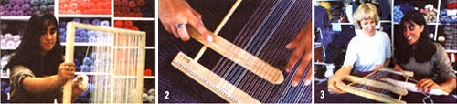
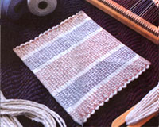

Handworks
Michelle Silver picks up the weaving habit again and discovers a new world beyond the grammar-school pot holder.
Weaving, the interlacing of two materials, is one of the oldest skills in the world. It's done by holding one set of parallel threads so that you can cross a second set of threads over and under the first set to form a fabric.
How much time and money you spend is entirely up to you. As a beginner, I made my own frame loom, bought some cheap yarn, and was on my way for under $10.
Professionals may spend as much as $3000 on a loom, an apparatus that speeds up the over-and-under process by raising the preselected threads. Exotic mohair and silk yarns can cost as much as $10 an ounce. There is even a computer program now, called Combby 8, that allows you to design your own pattern and transmit it to your loom; it will automatically pick up all of the threads you selected for your individual pattern.
"Have you ever woven before?" Judy Steinkoenig asks. She's the co-owner of a local weaving shop and my instructor.
Sure I'd woven. There was the set of square pot holders I made in grade school. And shortly thereafter, I bought myself a weaving kit complete with fabric ties and plastic, red loom. It wasn't long before I filled the kitchen with a colorful assortment of more useless pot holders. Within a few weeks, Mom ceased being impressed, and I didn't know what else to make, so I threw away the loom and retired early.
Judy swears she never once made a pot holder. In fact, she never even tried weaving until she was married and home rais ing her one-year-old son. She was in dire need of a hobby when she discovered a local weaving course.
"I had tried pottery and cross-stitching, but everything called for specific patterns," Judy says. "My grandmother tried to teach me to knit and ended up telling me I was hopeless. I just didn't understand it and there was no freedom in it for me. Weaving was a craft I understood, and I found I could make wonderful things."
Her favorite advice is: "Be a kid. A lot of adults will ask me how their projects are going to turn out if they do such and such. I'll tell them I don't know, try it; find out. Kids are much more willing to experiment. They'll change their weaving patterns all the time, and they're not as tough on themselves when they make mistakes."
If there is one thing I learned that afternoon, it's that weaving calls for patience. While some may find the process tedious, many will find weaving a good way to escape stress for a while. In fact, according to Judy, a number of students are professionals in high-tech jobs who have chosen weaving as a creative outlet.
On the next page are instructions for making a plain-weaving project on a hand-built wooden-frame loom. If you wish to add complexity, experiment with different textures and types of yarn. Weave in other materials: dried flowers, weeds, lace, rags, etc.
One unique aspect of this project is that you will decide when it is done. I decided a table mat would be enough of a challenge to begin my weaving endeavor. If I kept on going, I could have made an intricate wall hanging. If I had stopped earlier, I could have made, well ...a pot holder.
For frame: -four pieces of 2' x 1 1/2" hardwood (frame can be larger or smaller if you like) -drill -four 1" screws -four 1" corner brackets -sharp knife Note: You can buy a wooden loom for under $20 at many weaving-supply shops.
For weaving: -roll of string -yarn -16" shuttle ($3 to $4) -16" shed or "pickup" stick ($7 to $8)
Form a square or rectangle with your hardwood pieces. Place a bracket in one of the inside corners of your frame and make a pencil mark inside the two bracket holes. Remove the brackets and drill holes at the marks; then replace the brackets and drill in the screws. Repeat with other three corners. Then, with a sharp knife, cut six to eight small grooves per inch on the inside top and inside bottom of your frame. Be careful to make certain that the grooves on the top and bottom of the frame line up exactly.
Tie the end of your string around the first groove at the upper left-hand corner of your frame, and knot. Then bring the string end down over the frame opening, into the first bottom groove, and back up to the second groove on top. Continue stringing through all of the grooves, keeping the tension taut (not so taut that the strings could break). When you reach the right-hand side of the frame, tie the string around the last groove and make a knot before cutting. This set of vertical strings is called "the warp."
Next, lift your shuttle and wrap a bunch of yarn around it in a figure-eight formation. This will be the yarn for your horizontal weave, or "weft."
Grab the shed stick in your right hand and, starting at the right-hand side of your frame, pick up the first string with it. Leave the second string and pick up the third. Continue picking up every other string so that it runs past the frame and then rotate the stick so it is resting on its side. This will further raise all of the strings you have just picked up. The space between the raised and lower strings is called "the shed."
Starting at the right-hand side, pull the shuttle through the shed (passing it to your left hand) to the other side; do not pull so tight that you distort the left-hand warp. Now use a fork to push the yarn down toward the bottom of the frame. If you wish to have a fringe on your mat, leave one or two inches between this weave, or "shot," and the bottom of the frame.
Next, pick up the warp again with your shed stick. This time start with the second string, and continue picking up every other weft thread. (These will be all of the strings you ignored the first time around.) Again, rotate the stick and pull your shuttle through (starting from the left this time). Pull this new shot down to the first one with your fork. Repeat from the beginning. If you miss a string with your shed stick once or twice, don't worry about it-it won't show up. Note: You may wish to go over two and under two to achieve a "basket weave:" Or go under one and over three to achieve a "rib weave:'
Continue weaving until you reach the size you desire. If you wish to fill the whole frame, remember to leave the same amount of room for the fringe at the top that you left at the bottom of the frame. Don't worry; your fabric is interlaced and will not come apart. To make the fringe, tie three or four pieces of string into a knot as close to the weave as possible. Wash the final piece to give it a finished look.
For plans or more information, call Judy Steinkoenig at Shuttles, Spindles & Skeins, Inc. (303) 494-1077.
|
 1.Michelle warping her homemade frame. 2.The shed stick picks up every other strip on a prefab frame and separates them to form the ""shed."" 3.Judy and Michelle ru.n the shuttle throw the warp. |
4.Pulling the new ""shot"" down to the last and tightening it with a fork. 5.Cutting the final project from the loom. |
 |